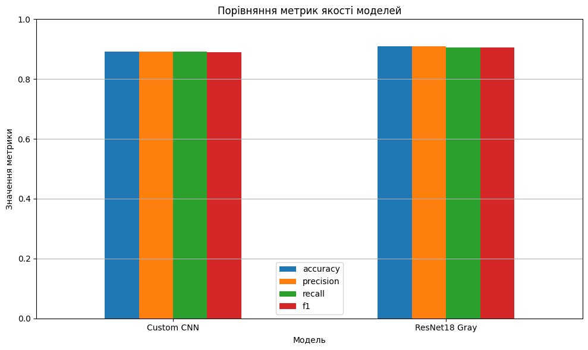
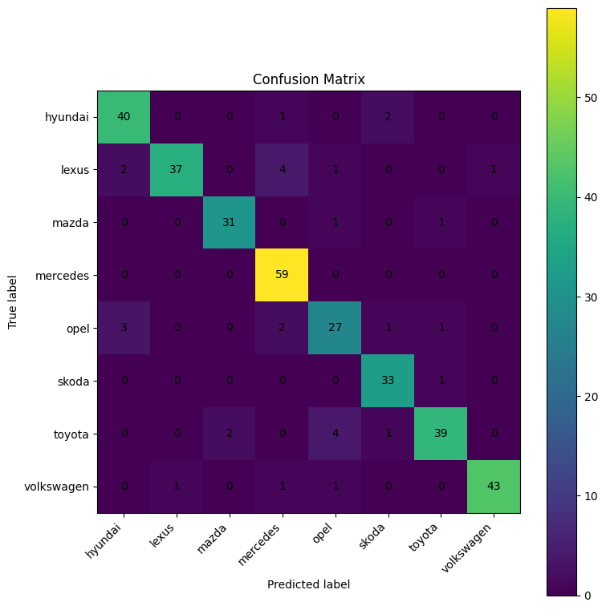
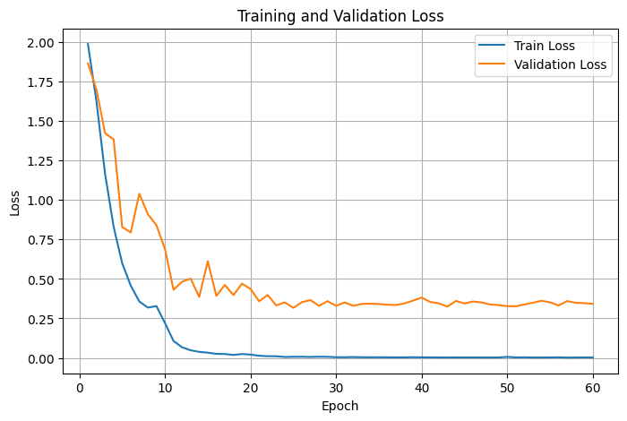
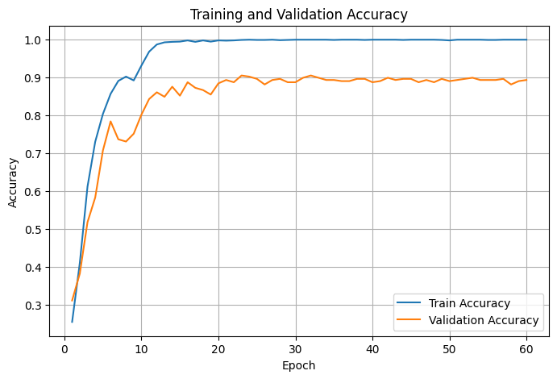

Що робить система?
Проєкт реалізує систему автоматичного розпізнавання автомобільного бренду за зображенням емблеми. Користувач може завантажити зображення логотипа, обрати модель класифікації та отримати прогноз із top-3 ймовірностями.
Особливість системи полягає в тому, що модель працює з одноканальними grayscale-зображеннями. Це означає, що класифікація виконується не за кольоровими підказками, а за формою, контуром та структурою емблеми.
Тип задачі
Багатокласова класифікація
Вхідні дані
Grayscale-зображення автомобільної емблеми
Фреймворк
Python, PyTorch, Torchvision
Демо
Gradio на Hugging Face Spaces
Як працює система?
01
Upload image
Користувач завантажує зображення автомобільної емблеми.
02
Preprocessing
Зображення переводиться у grayscale, масштабується та нормалізується.
03
Model inference
Обрана модель виконує класифікацію зображення.
04
Prediction
Система повертає predicted class, confidence та top-3 результати.
Підтримувані марки
Порівняння архітектур
Custom CNN
Власна згорткова нейронна мережа, створена спеціально для задачі класифікації автомобільних емблем. Архітектура складається зі згорткових блоків, BatchNorm, ReLU, MaxPooling, Adaptive Average Pooling та повнозв’язного класифікатора.
- Працює з одним вхідним каналом.
- Має компактнішу архітектуру.
- Добре підходить для демонстрації власної реалізації CNN.
ResNet18 Gray
Модель ResNet18 була адаптована для grayscale-зображень шляхом зміни першого згорткового шару. Фінальний класифікаційний шар також замінено відповідно до кількості класів автомобільних брендів.
- Глибша архітектура з residual-зв’язками.
- Підходить для порівняння з власною CNN.
- Може мати вищу якість, але є обчислювально складнішою.
Метрики та аналіз якості

Порівняння метрик якості моделей
Таблиця метрик показує якість роботи кожної архітектури за ключовими показниками класифікації та допомагає порівняти Custom CNN із ResNet18 Gray на однаковому test-наборі.
Confusion Matrix
Матриця помилок дозволяє побачити, які класи модель розпізнає найкраще, а які бренди найчастіше плутаються між собою. Це допомагає зрозуміти сильні та слабкі сторони моделі та можливі напрямки для покращення. Зверніть увагу, що ця матриця була створена на основі результатів Custom CNN

Графіки навчання моделі

Аналіз функції втрат
Функція втрат показує, наскільки сильно модель помиляється під час класифікації. Зменшення train loss означає, що модель успішно вивчає закономірності тренувального набору. Стабілізація validation loss показує, що після певної кількості епох модель уже майже не покращує якість на нових даних.
Аналіз точності
Графік точності демонструє, що train accuracy майже досягає максимального значення, а validation accuracy стабілізується приблизно на рівні 0.89–0.90. Це означає, що модель добре класифікує тренувальні приклади та зберігає достатньо високу якість на валідаційних даних.

Протестуй класифікацію зображення
Натисни кнопку нижче, щоб перейти до Hugging Face Space. Там можна завантажити зображення емблеми, обрати Custom CNN або ResNet18 Gray та отримати top-3 прогнози.
Важлива примітка перед запуском демо
Поточна версія системи навчена розпізнавати 8 класів автомобільних емблем. Тому для коректного тестування потрібно завантажувати зображення емблем однієї з таких марок:
- Hyundai
- Lexus
- Mazda
- Mercedes
- Opel
- Skoda
- Toyota
- Volkswagen
Якщо завантажити емблему іншого бренду, модель все одно обере один із цих 8 класів, але такий результат не можна вважати коректною класифікацією.
Також, зображення емблеми не повинно займати дуже малу частину кадру, інакше модель може не розпізнати її форму та структуру.